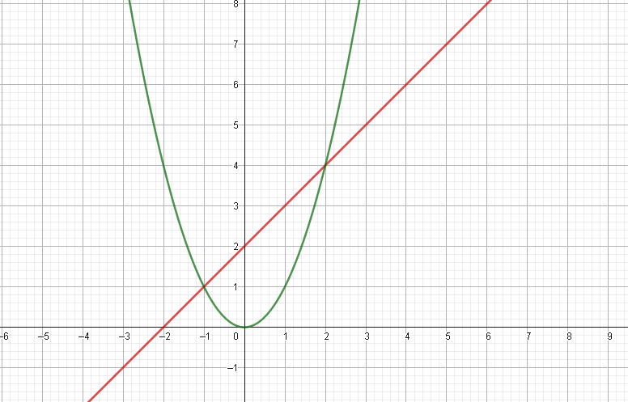
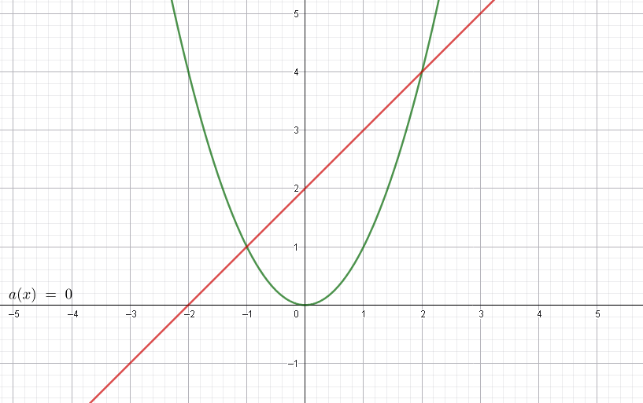

3. Área bajo y entre curvas
El uso más clásico de la integral definida es calcular áreas. Cuando queremos hallar el área atrapada entre dos o más funciones, aplicamos la regla de "Curva superior menos curva inferior".
$$ A = \int_{a}^{b} [f(x) - g(x)] dx $$
Ejercicio 1: Área entre 2 funciones
Encontrar el área limitada por: \( y = x^2 \) y \( y = x + 2 \)

- Puntos de corte: Igualamos \( x^2 = x + 2 \Rightarrow x^2 - x - 2 = 0 \). Resolviendo obtenemos \( x = -1 \) y \( x = 2 \).
- Identificar arriba y abajo: Entre -1 y 2, la recta \( x + 2 \) está por encima de la parábola \( x^2 \).
- Plantear la integral: $$ A = \int_{-1}^{2} [(x + 2) - x^2] dx $$
- Resolver: $$ A = \left[ \frac{x^2}{2} + 2x - \frac{x^3}{3} \right]_{-1}^{2} = \frac{9}{2} = 4.5 \text{ u}^2 $$
Ejercicio 2: Área acotada por 3 funciones
Encontrar el área limitada por: \( y = x^2 \), \( y = 2 - x \) y el eje X (\( y = 0 \))

- Puntos de corte:
Parábola y recta: \( x^2 = 2 - x \Rightarrow x = 1 \).
Parábola y eje X: \( x^2 = 0 \Rightarrow x = 0 \).
Recta y eje X: \( 2 - x = 0 \Rightarrow x = 2 \). - Dividir el área: Como el techo del área cambia en \(x=1\), necesitamos dos integrales. De \(0\) a \(1\), el techo es \(x^2\). De \(1\) a \(2\), el techo es \(2-x\).
- Plantear las integrales: $$ A = \int_{0}^{1} (x^2 - 0) dx + \int_{1}^{2} ((2 - x) - 0) dx $$
- Resolver sumando ambas partes: $$ A = \left[ \frac{x^3}{3} \right]_{0}^{1} + \left[ 2x - \frac{x^2}{2} \right]_{1}^{2} $$ $$ A = \frac{1}{3} + \frac{1}{2} = \frac{5}{6} \text{ u}^2 $$
📏 Unidades Cuadradas
Siempre que termines un ejercicio de áreas, recuerda poner \( \text{u}^2 \) (unidades cuadradas) al final de tu respuesta. En la Universidad, olvidar eso en el examen te puede costar décimas valiosas.
Video Recomendado
Puntos de corte y cálculo de áreas

Matemáticas profe Alex